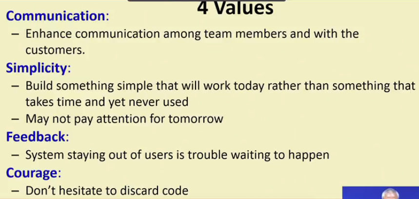
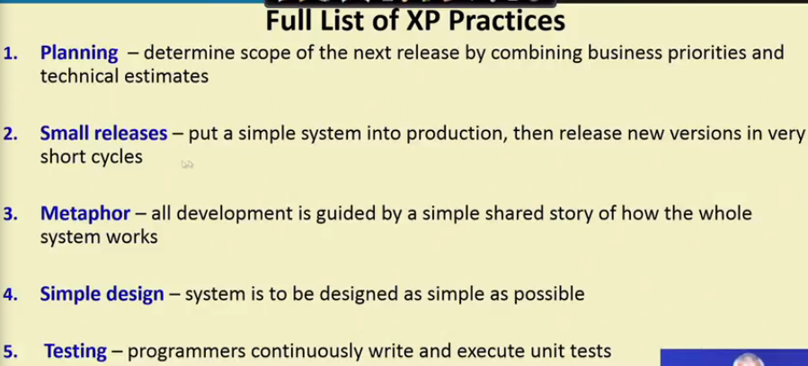
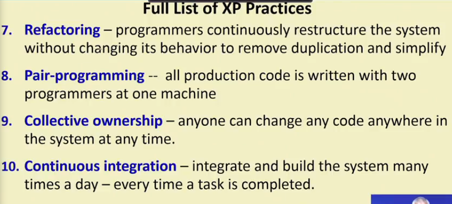
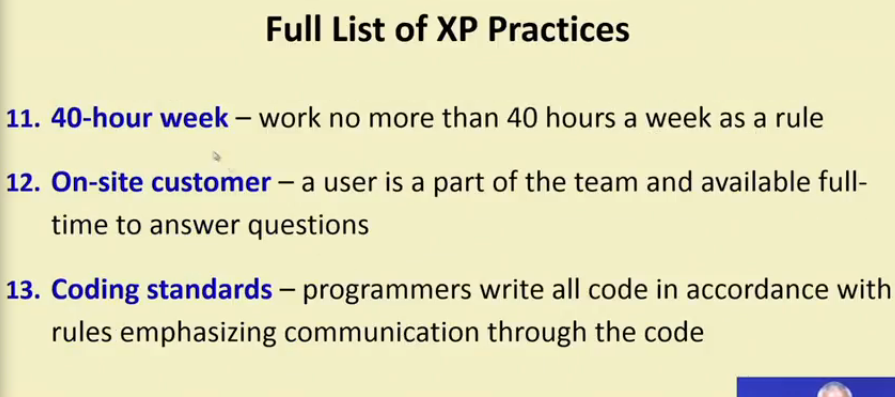

Extreme Program
The methodology got its name from the fact:
- Recommends taking the best practices to extreme levels.
- If something is good, why not do it all the time.
“Take good practices to extreme”



